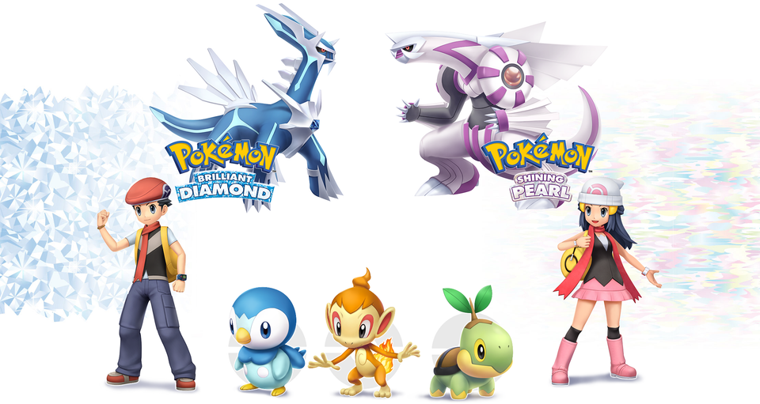

Pokemon Brilliant Diamond and Shining Pearl Announced!

4/11/21, Sunday
Breaking News
BDSP
After a decade of hype and anticipation, The Pokemon Company confirmed the series would be returning to the Sinnoh region with the announcement of Brilliant Diamond & Shining Pearl in February 2021.
While there is still a lot we don’t know about the new fourth generation titles outside of them being “faithful” to the originals, a post online revealed just how many features could return in the Nintendo Switch remakes.
Breaking with decades of tradition, Game Freak is not only NOT developing the Sinnoh remakes, but Brilliant Diamond & Shining Pearl are aiming to be faithful recreations rather then a modern gen reimagining such as 2014’s Omega Ruby & Alpha Sapphire were to Gen III.
A viral post on the r/Pokemon subreddit compiled a list of possible features that could be included in the upcoming Gen IV remakes. “If BDSP are truly faithful recreations of the originals, we’re getting some cool features returning to the series,” the fan wrote.
What does Gen 8's National Dex Crisis mean for BDSP?
4/11/21, Sunday
Speculation
SWSH
BDSP
Going back to the Pokedex, to what extent will their selection of Pokemon to appear in the remakes deviate from that of the originals? Most speculate an increase in Fire and Electric types, and if they were to deviate at all in the roster of Pokemon available, I would agree. My guess is that they will include 300 Pokemon total in the Pokedex. This will give the game much more balance. But let’s say this doesn’t happen, and we stick to the platinum dex. Is it too much of a stretch to call for Sinohan forms? Maybe we can have Psyduck come back as a fire type? Or maybe the gen 4 pre-evolutions like Chingling can receive an alternative evolution to Chimecho? Or at least a regional variant? Will Galarian Mr. Mime be available since Mime Jr. is in the remakes? If so, then what about Mr. Rime? Yanmega was introduced in Sinnoh, but it was also given a dex slot in the Johto remakes, so would Mr. Rime receive the same treatment? These questions boil down mainly to compatibility, as we discussed earlier.
Now it’s worth exploring how faithful these games can be. How does gamefreak define faithful? Graphically, that would mean ORAS was certainly not faithful to the extent BDSP is. ORAS saw major character redesigns that were acclaimed by fans, so is it even possible for Sinnoh characters to receive the same treatment? I would say it is definitely possible, and I think it’s worth mentioning that they didn’t show off too many main characters, perhaps because of a redesign. Again, it is possible, but I personally wouldn’t say it’s likely. ORAS expanded on old features like the DexNav, so will BDSP receive the same treatment? Will they keep every single feature that was eventually removed, such as the VS recorder, in the name of faithfulness? If this were the case, think about everything that was once lost, making a return. Pokemon contests for instance. Will they be updated or remain the same? What about the Exp Share? Will that revert to how it was, being a held item? Or would it remain updated like in SWSH? Will newer or updated items be available in these remakes? I would say so, even with how faithful they are trying to be. I don’t see them being too faithful to the point that they exclude the fairy-type for instance. Since I would believe that they would keep the updated versions of Pokemon types, I think they would keep the updated versions of items as well, which may include the Exp Share. Now would they be faithful enough to keep HMs? Probably not. I think Gamefreak has labelled HM’s as more of an inconvenience rather than an enjoyable feature. So with this assumption, how would surfing work? Would this utilize the Rotom bike from SWSH? Rotom is from Sinnoh, so it’s definitely in the realm of possibility. Well how would Flying work? We won’t have the Corviknight taxi, or maybe we will? If we don’t, will we see something like Ride Pokemon? A lot of obstacles in the original games existed in the form of requiring HMs. Boulders were especially notorious for this in Mt. Coronet. SWSH on the other hand, doesn’t have boulders. So, what could we use for that? This leads me to believe that Ride Pokemon will make a comeback, there will be new obstacles, or HMs will return. Although the last option seems the most unlikely. My guess is that Ride Pokemon will be manifested in this game in some way, where you gain a ride pokemon each time you beat a gym.
All these implications are important to ask for, and they only scratch the surface of everything to be revealed in these remakes. There have been rumours that megas will exist in these games, but we’ll have to wait and see for how that will impact the game. All we can do right now is speculate, and analyze what this game means for the present state of Pokemon as well as the direction that the franchise will choose to move in.
The Pokemon Community's top 5 favorite Galarian Forms!